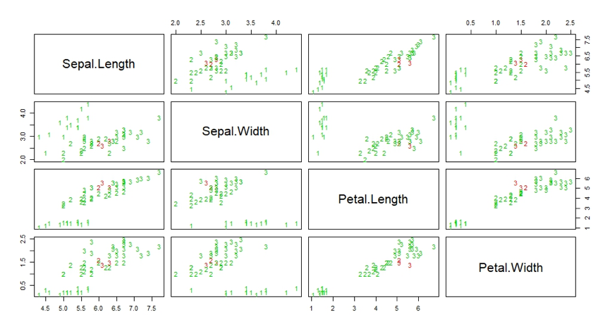

k-近邻算法是一种基于实例的分类方法
k-近邻(kNN，k-Nearest Neighbors)算法是一种基于实例的分类方法。该方法就是找出与未知样本x距离最近的k个训练样本，看这k个样本中多数属于哪一类，就把x归为那一类。k-近邻方法是一种懒惰学习方法，它存放样本，直到需要分类时才进行分类，如果样本集比较复杂，可能会导致很大的计算开销，因此无法应用到实时性很强的场合。
K值大小的选取会对K近邻算法的结果会产生重大影响。如果选择较小的K值，就相当于用较小的领域中的训练实例进行预测，“学习”近似误差会减小，只有与输入实例较近或相似的训练实例才会对预测结果起作用，与此同时带来的问题是“学习”的估计误差会增大，换句话说，K值的减小就意味着整体模型变得复杂，容易发生过拟合；如果选择较大的K值，就相当于用较大领域中的训练实例进行预测，其优点是可以减少学习的估计误差，但缺点是学习的近似误差会增大。这时候，与输入实例较远（不相似的）训练实例也会对预测器作用，使预测发生错误。在实际应用中，K值一般取一个比较小的数值，例如采用交叉验证法（简单来说，就是一部分样本做训练集，一部分做测试集）来选择最优的K值。我们使用R语言中的kknn()函数对iris数据集进行knn算法的实现。
# 加载kknn函数包
library(kknn)
# 导入iris数据集
data(iris)
# 生成采样数据
m <- dim(iris)[1]
val <- sample(1:m, size = round(m/3), replace = FALSE, prob = rep(1/m, m))
# 生成训练数据集iris.learn和测试数据集iris.valid
iris.learn <- iris[-val,]
iris.valid <- iris[val,]
# 调用kknn()函数
iris.kknn <- kknn(Species~., iris.learn, iris.valid, distance = 1,
kernel = "triangular")
# 查看结果
summary(iris.kknn)
# 使用交叉验证法查看测试数据集分类情况
fit <- fitted(iris.kknn)
table(iris.valid$Species, fit)
fit
setosa versicolor virginica
setosa 14 0 0
versicolor 0 15 1
virginica 0 2 18
# 绘制测试数据集的散点矩阵图，其中错误分类样本用红色标注
pcol <- as.character(as.numeric(iris.valid$Species))
pairs(iris.valid[1:4], pch = pcol, col = c("green3", "red")
[(iris.valid$Species != fit)+1])
